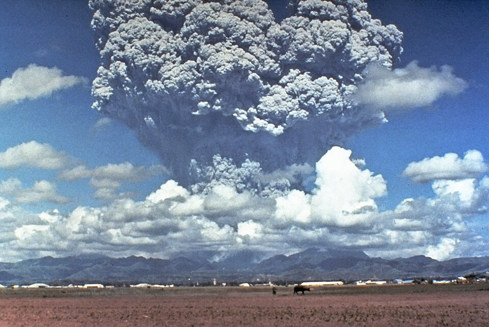
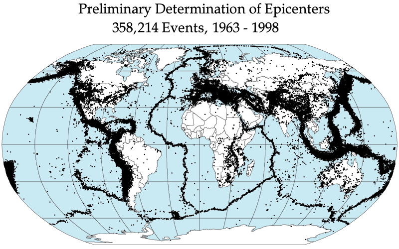
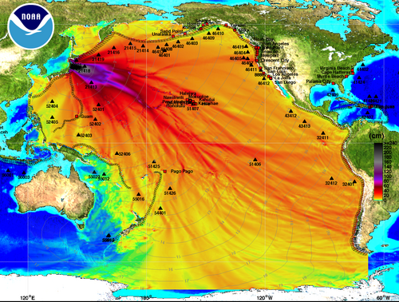
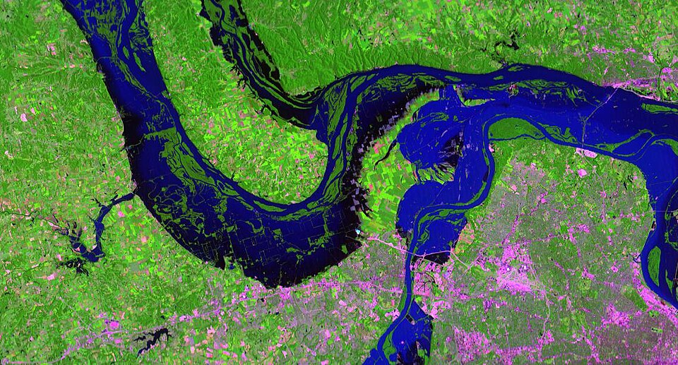
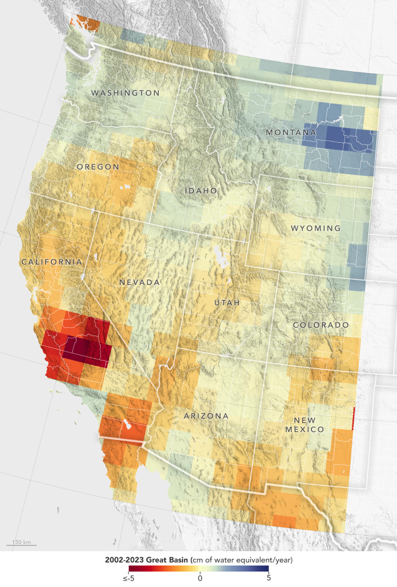

About this edition
The Advanced Edition covers the same ten hazards as the children's site, written for adults, students and practitioners. Each hazard is a self-contained course: an overview, a sequence of technical lessons with worked quantitative exercises, analyses of major historical events, and a list of references for further study.
Choose a hazard from the four groups below.
Work through the lessons in order; each builds on the previous ones.
Attempt the exercises before opening their solutions.
Study the case studies and follow up the references.
Geophysical hazards
Volcanism, seismicity and the ocean waves they generate.

Volcanic Eruptions Magma genesis, fragmentation, eruption columns, volcanic hazards, monitoring, climate, aviation ash and risk.
Earthquakes Fault mechanics, seismic waves, magnitude and moment, earthquake statistics, seismic hazard and engineering.
Tsunamis Long-wave physics, sources, propagation, run-up, detection, warning and risk reduction for tsunamis.Meteorological hazards
Severe convective storms and tropical cyclones.

Hydrological and climatological hazards
Too much water, too little water, and the fires that follow drought.

Floods Rainfall–runoff, hydrographs, open-channel hydraulics, flood frequency, defences, risk and climate change.
Droughts Drought physics, evapotranspiration, drought indices, megadroughts, groundwater, famine risk and attribution. Wildfires
Combustion, fuels and spread models, fire weather and danger rating, pyroconvection, the WUI, satellites and smoke.
Wildfires
Combustion, fuels and spread models, fire weather and danger rating, pyroconvection, the WUI, satellites and smoke.
Mass movements
Gravity-driven flows of snow, soil, rock and debris.